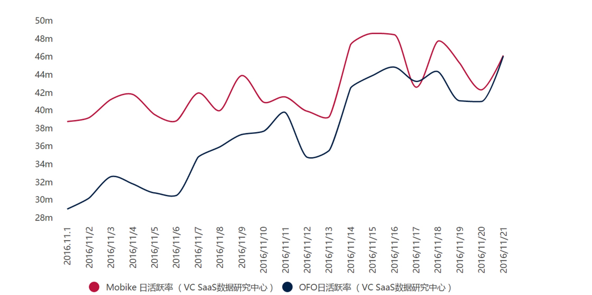
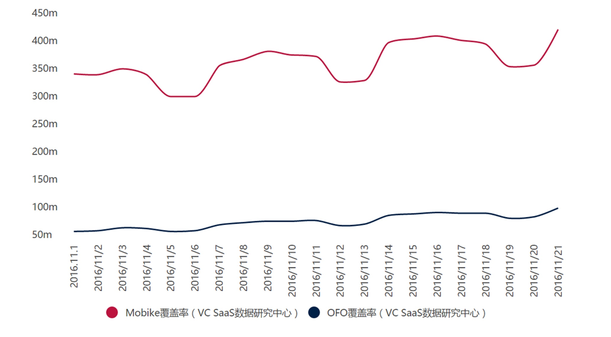
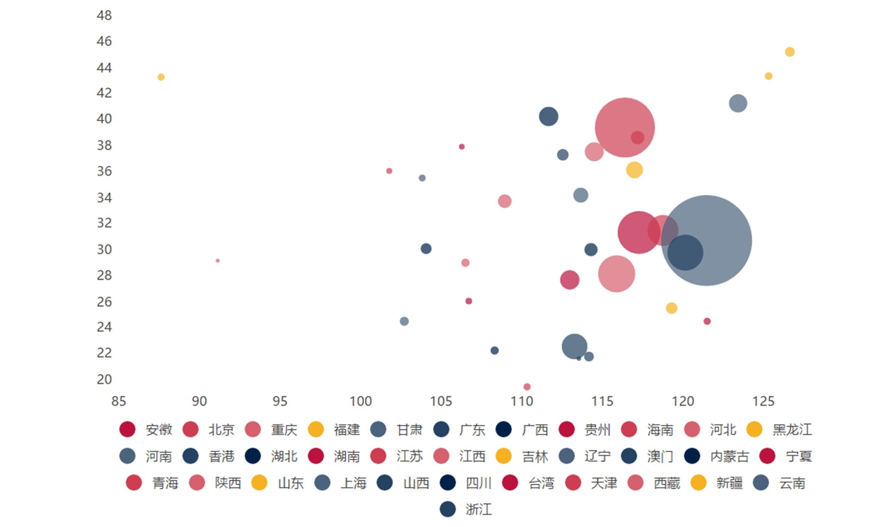
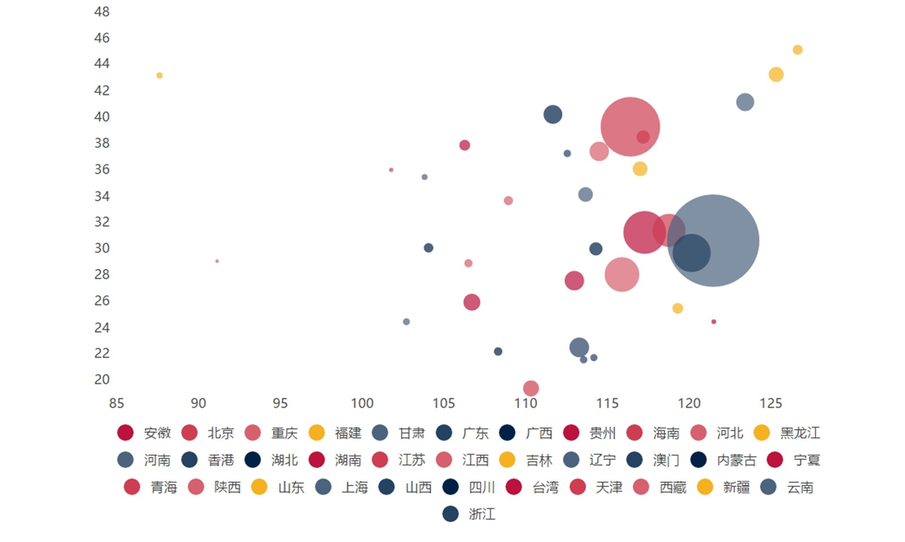

聚焦新发明
focus on new inventions
主页
共享单车
高铁
网购
扫码支付
关于我们
共享单车 (bike-sharing)
共享单车采用分时租赁模式，是一种新型绿色环保共享经济
（一）Mobike VS OFO 用户日活跃率和覆盖率


（二）Mobike VS OFO 用户性别比例
（三）Mobike VS OFO 用户年龄比例
（四）Mobike VS OFO 微博(左)和AppStore（右）正负面情绪
（五）Mobike VS OFO 区域用户热度

